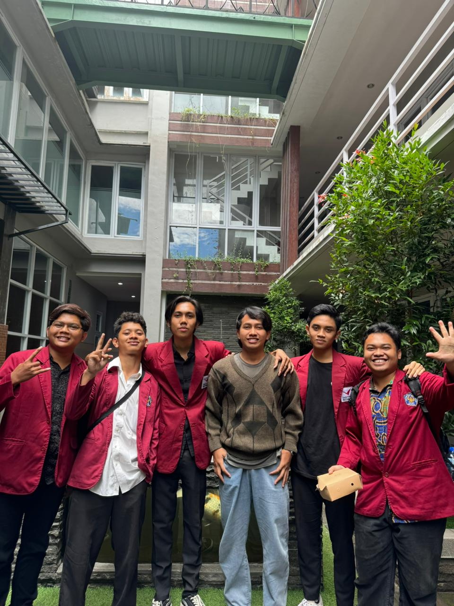

|  | |
| @pti.unisri | |
Pendidikan Teknologi informasi merupakan salah satu jurusan pendidikan tingkat perguruan tinggi yang mempelajari serta menekankan pada penguasaan ilmu dasar teknologi informasi serta memperbesar kesempatan memperdalam keahlian dan kemampuan pembelajarannya sesuai dengan kompetensi yang ada.
Menjadi program studi yang menghasilkan pendidik dan tenaga professional di bidang Teknologi Informasi yang unggul di tingkat regional bidang pendidikan berbasis mobile Pada Tahun 2022.
MISI
Melaksanakan penelitian dan pengabdian kemudian memanfaatkan hasil tersebut untuk perbaikan dan peningkatan pembelajaran bagi peserta didik dan menyebarluaskan kepada masyarakat. Menjadikan ahli teknologi informasi yang berkemampuan wirausaha berbekal kompetensi sistem manajemen pembelajaran berbasis mobile. Mewujudkan kompetensi diri supaya mampu menjalin kerjasama dengan pengguna maupun instansi yang menggunakan teknologi informasi sebagai media.